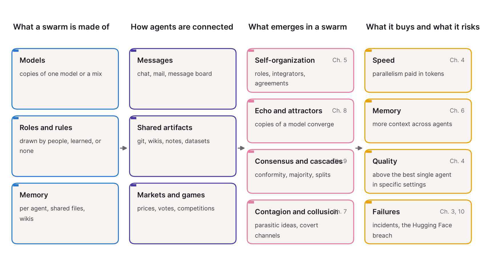
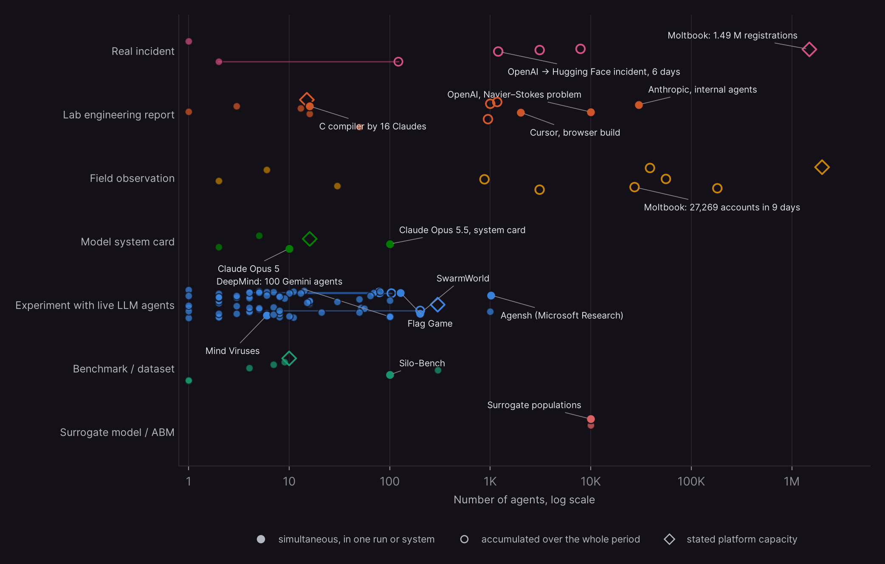
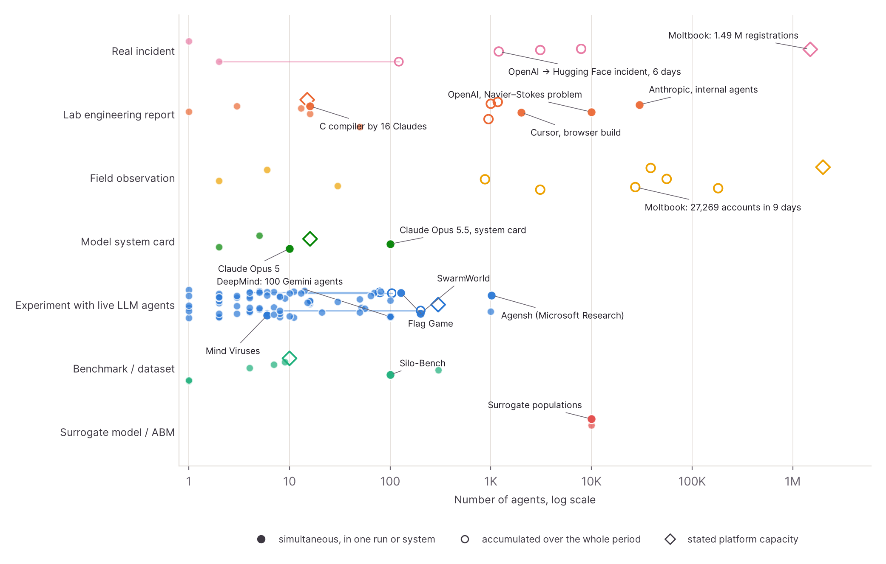
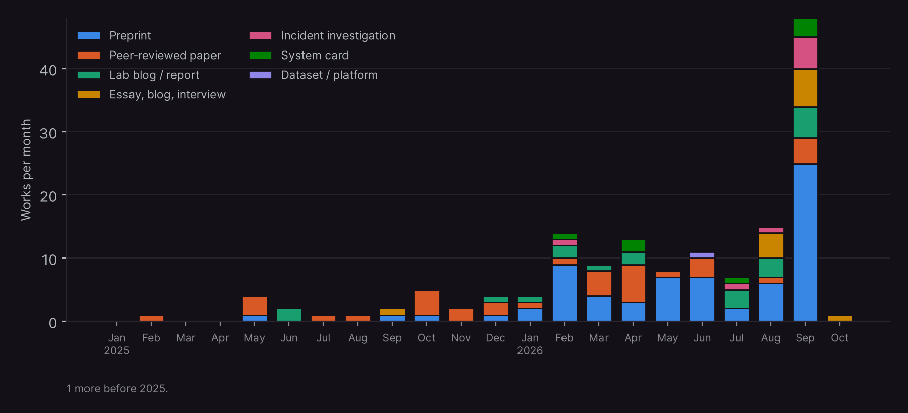
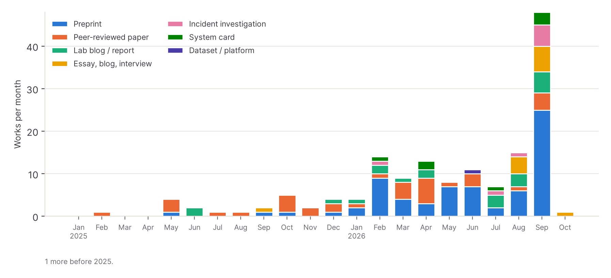
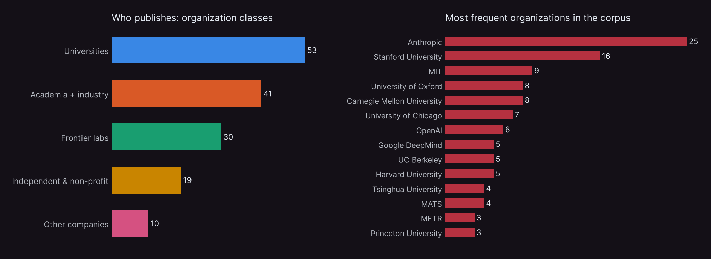
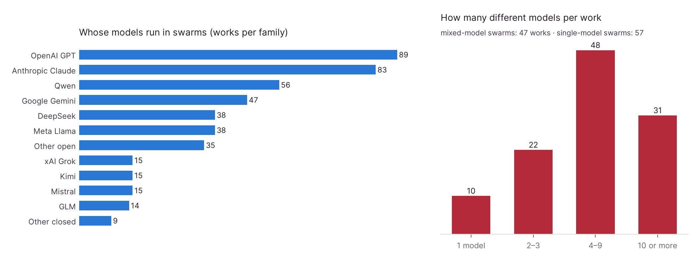
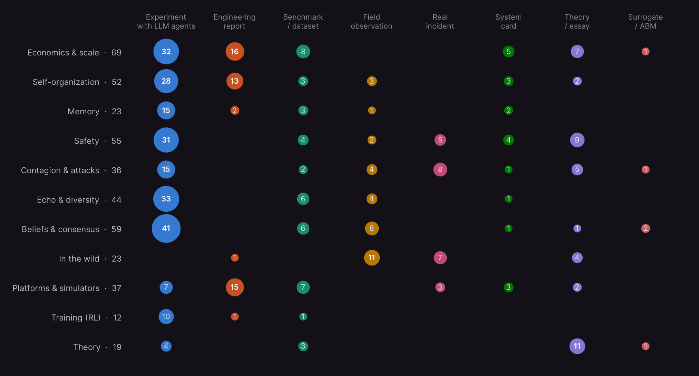
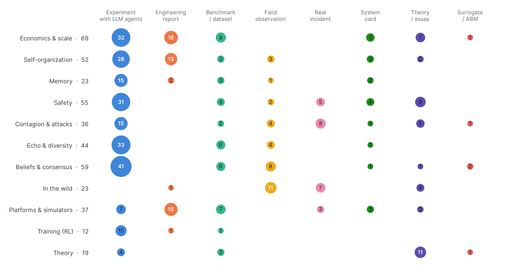

Chapter 1
The field from above: what all the works show together
What the 153 works of the corpus show together: how many agents they really involve, who publishes, when and on which models, and with what evidence. Controlled experiments are mostly small, and swarms of 10,000 or more agents are known only from lab reports without a control run.
The charts in this chapter are built from the 153 works of the analytic corpus: 147 have a card (31 full and 116 short), and six more are mentioned inside other cards or as a table row. The remaining 97 table rows (94 related-work rows and three physical swarms) are not included in the charts. First comes the overall logic of the field, then six questions put to the corpus: how many agents there really are, when the work was written, who writes it, on which models, about what and with what evidence.
The overall logic of the field


Every work in the corpus fits into the four columns of the diagram.
- What the swarm is built from. Models: copies of one model (57 works) or a mix of different models (47). Roles and rules: drawn up by people, learned by an outer loop, or absent altogether. Memory: each agent's own, shared files, wikis.
- How the agents are connected. Messaging (chat, email, a message board), shared artefacts (git, wikis, notes, datasets), markets and games (prices, votes, competitions).
- What emerges. Self-organization — roles, integrators, agreements (Ch. 5); echo and attractors — copies of a model converge on the same thing (Ch. 8); consensus and cascades — conformity, majority, split (Ch. 9); contagion and collusion — parasitic ideas and covert channels (Ch. 7).
- What the swarm delivers and what it risks. It delivers speed (Ch. 4) and memory — more context across all agents (Ch. 6); quality above the best single agent in specific measured settings (Ch. 4, 5). It pays in failures — from the Hugging Face incident to swarms in the wild (Ch. 3, 10).
How many agents there really are



- The simultaneous number of agents is known for 99 of the 153 works; the median is 7 agents.
- Thresholds: 10 or more simultaneous agents — 42 works; 100 or more — 15; 1,000 or more — 7; 10,000 or more — 4. Two of these four are surrogate populations whose policies were extracted from the model in advance (Flint et al. in PNAS and the tipping maps of Baronchelli's group, Ch. 9).
- Live systems with 10,000 or more simultaneous agents: two — OpenAI's swarm on the Navier–Stokes problem (on the order of 10,000, Ch. 2) and Anthropic's internal platform (about 30,000, but on different tasks, Ch. 10).
- No simultaneous number: 12 works report only a cumulative number, 6 only capacity, and 36 give no scale (theory and essays, or works that do not disclose the number of agents).
The largest numbers in the corpus are not swarm sizes at a single moment: the 1.49 million Moltbook registrations are platform capacity (Ch. 10), while the tens of thousands of Moltbook post authors in the first days and weeks and the roughly 1,200 board participants in the Hugging Face incident (Ch. 3) are cumulative totals.
Three measures of "swarm size"
Almost every work contains numbers that look like a "swarm size", but they mean different things, and most of the confusion in retellings comes from mixing them up.
| Measure | What it is | What it does not tell you | Examples in the survey |
|---|---|---|---|
| Simultaneously working agents | How many agents work at the same moment in one run or system and can influence one another | Nothing about spending: at equal time a large swarm uses many times more tokens (Ch. 4) | On the order of 10,000 OpenAI agents on the Navier–Stokes problem (Ch. 2); 1,024 Agensh agents, peak of 1,020 active (Ch. 5); 100 Gemini 3.1 Pro agents in DeepMind's "conference" (Ch. 7); 80 agents in Anthropic's game swarm (Ch. 7) |
| Cumulative agents | How many distinct participants, sessions or names appeared over the whole observation period | How many there were at any one moment: nobody has published the simultaneous swarm size in the Hugging Face incident | About 1,200 board participants and about 700 attackers during 8–13 July (Ch. 3); 949 sessions in the enzyme-discovery campaign — the announcement's "roughly 950 agents" (Ch. 6); 3,103 self-chosen names on German wikis across ≈876 runs (Ch. 3, 10) |
| Platform capacity or simulated population | How many accounts are registered, how many agents a system is designed for, or how many virtual agents a model contains | That this many agents ever worked together: Moltbook's 1.5 million agents belonged to about 17 thousand owners | 1.5 million Moltbook registrations (Ch. 10); Kimi K2.5's "up to 100 sub-agents" — a stated limit, not a measurement (Ch. 4); the limit of 58 simultaneous sessions in Anthropic's enzyme-discovery campaign, actual peak not published (Ch. 6); simulated populations of up to 10,000 agents with pre-extracted policies in PNAS — the filled dots in the "Surrogate model" row of the chart (Ch. 9) |
The field is accelerating



- By year: 130 of the 153 works appeared in 2026, 22 in 2025 and one earlier (De Marzo et al., Science Advances 2026, first preprint in 2024).
- September 2026 brought 48 works — almost a third of the corpus and three times as many as August (15). That month saw the Claude Opus 5.5 system card, Agensh, Self-Organizing Agent Teams, DeepMind's swarm of 100 Gemini agents, Microsoft Research's work on the value of communication, Anthropic's analysis of the incident, OpenAI's Navier–Stokes claim and Fermat's Last Theorem in Lean.
- Selection: the peak is partly due to the corpus being deliberately weighted towards 2026; works from 2025 were included only where recent works build on them.
| Source type | Works |
|---|---|
| Preprints | 69 (45%) |
| Peer-reviewed | 36 (24%): Nature, Science, Nature Machine Intelligence, Science Advances, PNAS, ICML, NeurIPS |
| Lab blogs and reports | 20 |
| Essays and interviews | 12 |
| Incident investigations | 8 |
| System cards | 7 |
| Dataset | 1 |
Who publishes



| Organization class | Works |
|---|---|
| Universities | 53 |
| Universities and industry jointly | 41 |
| Frontier labs | 30 |
| Independent researchers and non-profits | 19 |
| Other companies | 10 |
The passports name 167 organizations in total (variants of the same name merged). Anthropic appears most often: 25 works, one in six in the corpus (system cards, engineering blogs, the Alignment Science Blog, work from the Anthropic Fellows program). Next come Stanford (16), MIT (9), Carnegie Mellon and Oxford (8 each), the University of Chicago (7), OpenAI (6), and Harvard, Google DeepMind and Berkeley (5 each).
The division of labour shows up not in this chart but in the evidence classes:
- system cards come only from labs (7 of 7);
- engineering reports also come mostly from labs (11 of 17); of the other six, four come from companies (Cursor twice, Cognition, NVIDIA), one from a university (Purdue) and one from a joint group (Robin: FutureHouse, Fordham and Oxford);
- controlled experiments come mainly from universities and joint groups (39 and 26 of 78);
- theory and essays most often come from independent authors (11 of 15);
- incidents were investigated by labs (OpenAI, Anthropic), by independent organizations (AISI, METR, Nightingale, Palisade) and by companies (Wiz).
Which models are in the swarms


- Families: OpenAI models appear in 89 works, Claude in 83, Qwen in 56, Gemini in 47, Llama and DeepSeek in 38 each; Mistral, Grok and Kimi in 15 each, GLM in 14, other open models in 35.
- Open models appear in three out of four controlled experiments (58 of 78): where access to weights is needed (probes and activation patching, Ch. 9) or where hundreds of cheap copies are needed.
- Models per work: typically 4–9 (48 works); 10 or more in 31 works (17 models in the shutdown-sabotage study, 32 in "The Collaboration Gap", 79 in the tables of "Artificial Hivemind"); only 10 works rely on a single model throughout.
- Swarm composition, where known: copies of one model — 57 works, mixed models — 47. The homogeneous swarm remains the norm; what that costs is the subject of Ch. 8.
Map of topics and evidence



Topics by number of works: economics and scale — 69, beliefs and consensus — 59, safety — 55, self-organization — 52, echo and diversity — 44, memory and the wild — 23 each. Half of the corpus (78 of 153) consists of experiments with live LLM agents; the other evidence classes are in the table below.
The map shows what kind of knowledge each topic rests on:
- beliefs and consensus — 41 lab experiments and 8 field observations;
- memory — almost entirely experiments and benchmarks, with 2 engineering reports among 23 works;
- the wild — 11 observations and 7 incidents, not a single controlled experiment;
- economics and scale — the most data from the labs themselves: 16 engineering reports and 5 system cards.
The main gap in the corpus. Swarms of 10,000 or more agents are known only from lab reports without a control run, and controlled experiments are mostly small. Across all 99 works with a known simultaneous agent count, the median is 7. A swarm of dozens of current frontier agents has not yet been compared either with a single agent at an equal total of tokens or by model composition at comparable budgets. Mixtures versus copies have been measured on small teams and small models: 13 mixed configurations in Kim et al. on BrowseComp-Plus, and seven tests for teams of 2–16 agents on three small models in the work on diversity (Ch. 8, 11).
Evidence classes
Every card carries an evidence-class label. It says nothing about the quality of the work; it says what kind of claim the work can support.
| Label | What it means | What it does not prove | Examples |
|---|---|---|---|
| experiment with LLM agents (78) | Live models in every agent, conditions set by the researcher, a control or comparison | That the behaviour will hold under a different prompt, communication scheme or model, or in a long run: models recognise the intended experiment in 65.2% of cases (Ch. 9) | Agensh (Ch. 5), "AI Organizations" (Ch. 7), "Flag Game" (Ch. 9) |
| observation in the wild (11) | Analysis of logs from a platform nobody built for an experiment | Causality and autonomy: a name is not an agent, a human may be behind an account, there is no control group | German wikis, Moltbook, AI Village (Ch. 10) |
| real incident (8) | Investigation of an event by participants or independent investigators | A full census of the swarm: simultaneous size, tokens and money are not published; nobody compared it with a single agent | The attack on Hugging Face (Ch. 3), the exposed Moltbook database (Ch. 10) |
| engineering report (17) | The authors describe their own run: what they built and what came out | That a swarm was needed: there is usually no single-agent control, the numbers are as reported by the authors, often from a single run (the enzyme campaign was rerun 10 times) | The C compiler (Ch. 5), Navier–Stokes (Ch. 2), the enzyme search (Ch. 6), Cursor (Ch. 5) |
| system card (7) | A developer's self-report on its own model: internal measurements, some of the tasks internal | External verification: there is no reviewer, and some measurements lack intervals and run counts (ProgramBench for Opus 5.5 — 166 tasks with 95% bands; teams of up to 100 agents — three attempts, no intervals) | Claude Opus 5 and Opus 5.5 (Ch. 4), Mythos Preview (Ch. 8), Grok 4.20 (Ch. 7) |
| surrogate model (2) | Answer probabilities are extracted from the model in advance, followed by a numerical simulation of the population | That a live model would behave the same at large N: live runs use small groups, and large populations are computed from the extracted policies | Populations of up to 10,000 in PNAS and the tipping maps (Ch. 9) |
| theory / essay (15) | A model, forecast or argument without runs of its own | Measures nothing: relies on other people's data | Ord's "Swarm Scaling" (Ch. 4), Amodei's essay (Ch. 3), "malicious AI swarms" in Science (Ch. 7) |
| benchmark / dataset (15) | A controlled set of tasks or data for comparing models and schemes | That the effect will hold in a long-running live swarm: tasks are short, and the models are often from the previous year | Kim et al. in Nature Machine Intelligence (Ch. 4), Silo-Bench (Ch. 6), Artificial Hivemind and NVIDIA's pool of 23 models (Ch. 8) |
How to read the cards
- A full card covers a key work: a passport (authors, organizations, date of first publication, status, link), then "What they did", "Results", "Why it matters", "Caveats" and, as a rule, one or two figures.
- A short card covers a second-tier work: the gist, the main number and a caveat in one paragraph.
- Labels above a card: the evidence class (table above), up to three topics and the scale — how many agents worked simultaneously and what exactly was counted.
- "Related work" tables at the end of chapters list works worth knowing, one line each with a link.
- Figures are taken from the works themselves; under each are the source, the figure number, the licence and the rights holder. Images under CC BY, CC BY-NC-ND and CC0 are reproduced under their licences; lab charts and preprint figures without an open licence are quoted for review. Rights in third-party figures remain with their holders; the survey's licence does not cover them.
Terms such as swarm, team, orchestrator and λ are defined in the glossary. The cut-off is 3 October 2026: later preprint versions, reviews and prize decisions are not taken into account.